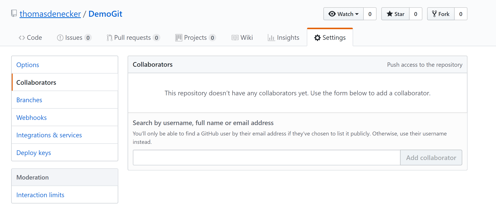
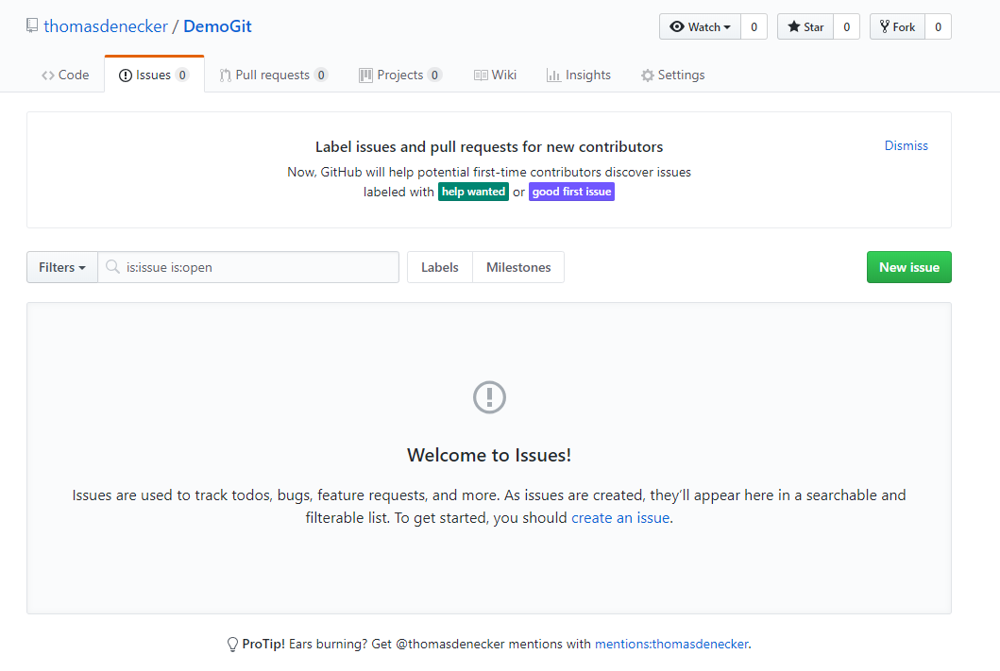
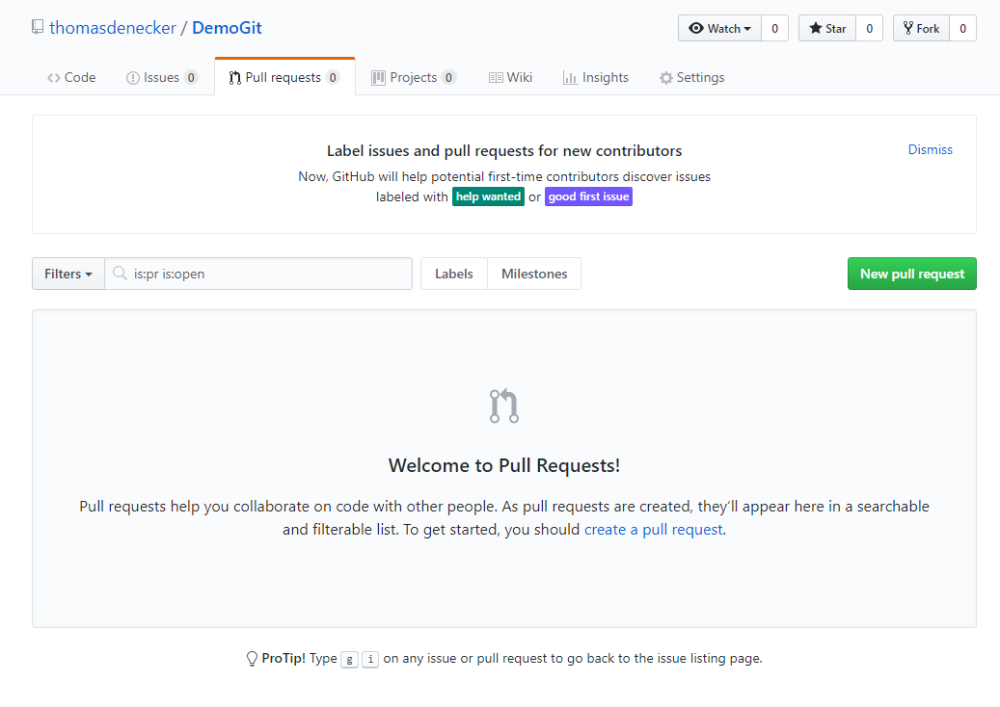
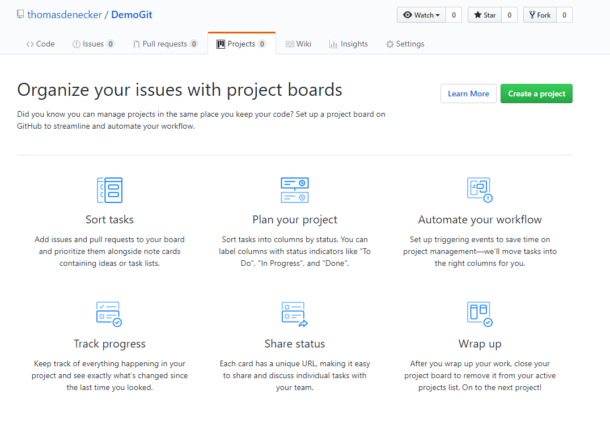
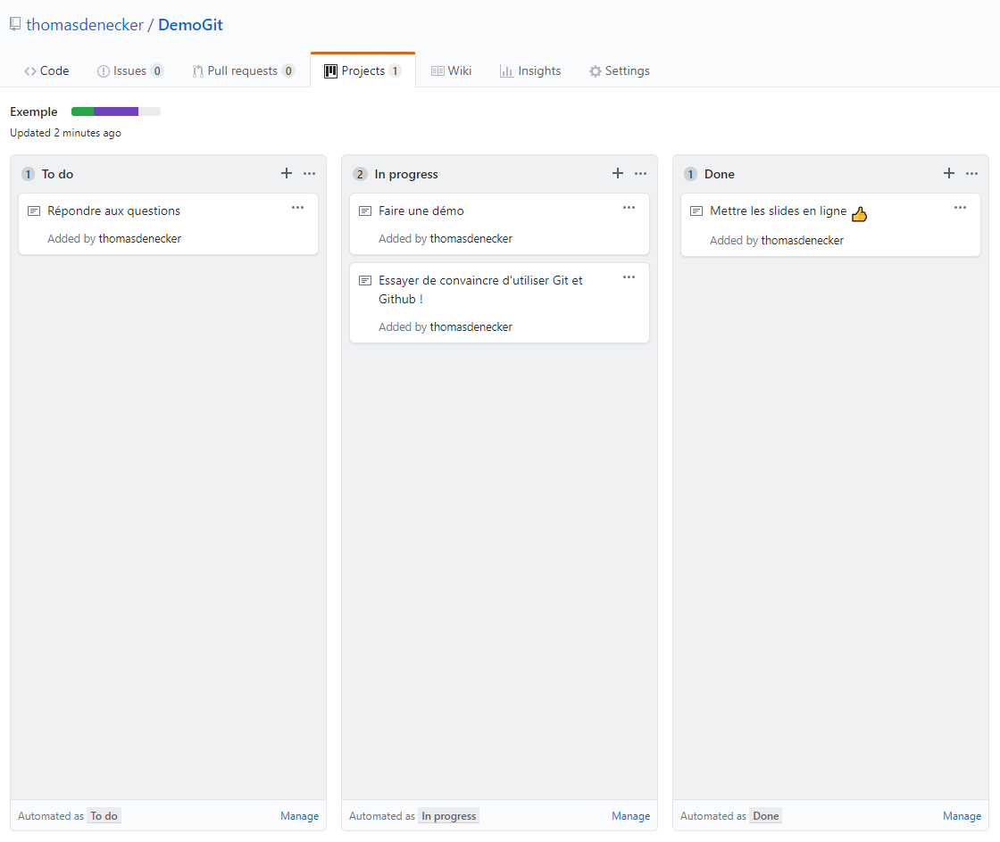
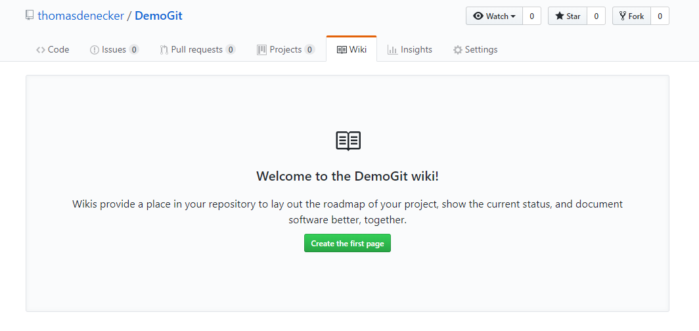
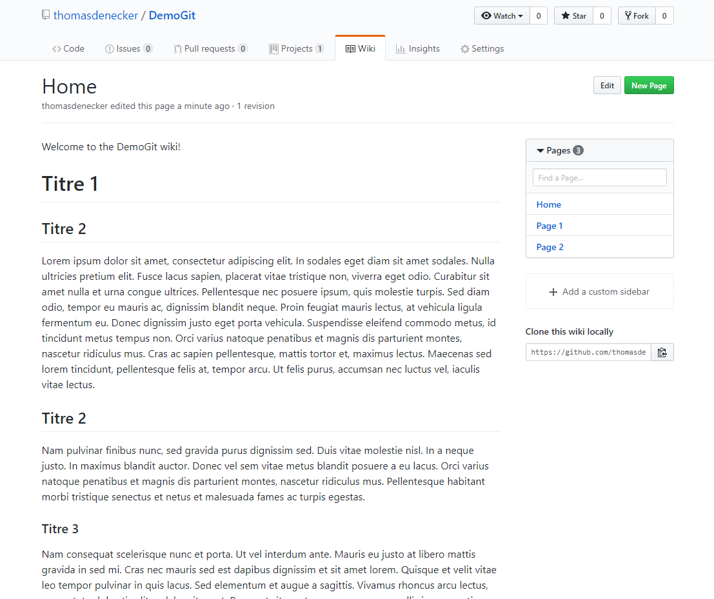
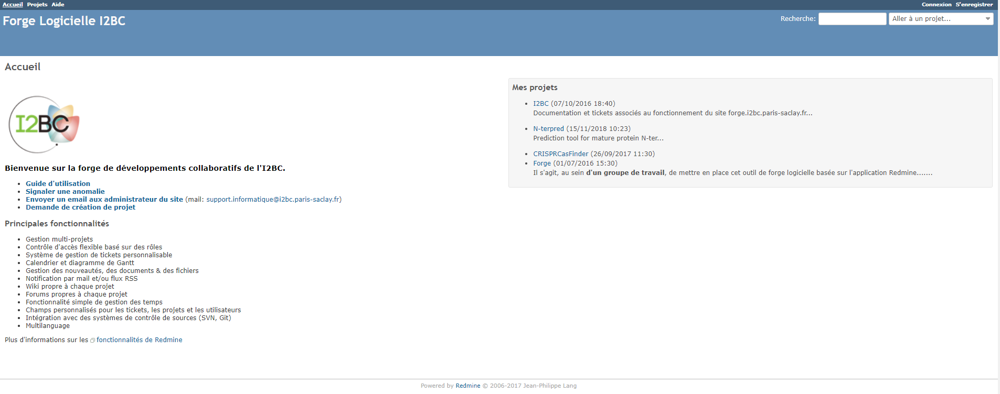

Git et Github
Thomas Denecker


26/11/2018
Resources : Pierre Poulain


Votre code ... 6 mois après
Lequel choisir ?
$ ls
R_script_03-04-2018.R R_script_final_modified2.R
R_script_17-06-2018.R R_script_final.R
R_script_18-03-2018.R R_script_OK.R
R_script_final_2018-09-20.R R_script.R
R_script_final_final.R R_script_really_final.R
Des solutions?
- Trier par date ?
- Trier par taille ?
Pas des solutions viables...
"Rule 4: Version Control All Custom Scripts"
Qui ? Quand ? Quoi ?
Gestionnaire de versions

Git
When it comes to reproducible science, Git is code for success ... and the key to its popularity is the online repository and social network, GitHub.
J. Perkel, Nature Index, 2018
“Most researchers are primarily collaborating with themselves,” [Tracy] Teal explains. “So, we teach it from the perspective of being helpful to a ‘future you’."
Il ne reste plus qu'à essayer!
# Création d'un nouveau répertoire
$ cd /Zone/De/Stockage/Du/Répertoire
$ mkdir gitFolder
$ cd gitFolder
# Définir son identité
$ git config --global user.name "Prénom Nom"
$ git config --global user.email "moi@mail.com"
# Initialiser git
$ git init
Git a-t-il détecté des changements ?
$ git statut
On branch master
No commits yet
nothing to commit (create/copy files and use "git add" to track)
Création d'un fichier
$ nano test.txt
$ cat test.txt
Mon premier fichier sur Git
Git a-t-il détecté des changements ?
$ git statut
On branch master
No commits yet
Untracked files:
(use "git add file..." to include in what will be committed)
test.txt
nothing added to commit but untracked files present (use "git add" to track)
Ajouter les changements
$ git add test.txt
$ git statut
On branch master
No commits yet
Changes to be committed:
(use "git rm --cached file..." to unstage)
new file: test.txt
Ajouter les changements
$ git commit -m "My first commit"
[master (root-commit) b4a7d66] My first commit
1 file changed, 1 insertion(+)
create mode 100644 test.txt
$ git statut
On branch master
nothing to commit, working tree clean
Modifier le fichier
$ cat test.txt
Mon premier test sur Git
Modification du texte.
Des changements?
$ git statut
On branch master
Changes not staged for commit:
(use "git add file..." to update what will be committed)
(use "git checkout -- file..." to discard changes in working directory)
modified: test.txt
no changes added to commit (use "git add" and/or "git commit -a")
Des changements?
$ git diff
The file will have its original line endings in your working directory.
diff --git a/test.txt b/test.txt
index cd1ad34..32a6825 100644
--- a/test.txt
+++ b/test.txt
@@ -1 +1,3 @@
-Mon premier fichier sur Git
+Mon premier test sur Git
+
+Modification du texte.
Ajouter les changements
$ git add test.txt
$ git commit -m "My first commit"
[master (root-commit) b4a7d66] My first commit
1 file changed, 1 insertion(+)
create mode 100644 test.txt
$ git statut
On branch master
nothing to commit, working tree clean
Liste des commits
$ git log
commit bbea074d0b2f6335f99e2d54c6a7092adb08f337 (HEAD -> master)
Author: thomasdenecker thomas.denecker@gmail.com
Date: Tue Nov 13 15:15:59 2018 +0100
My second commit
commit b4a7d66afb8066bced7a0d6113ab26a519b1b6be
Author: thomasdenecker thomas.denecker@gmail.com
Date: Tue Nov 13 14:49:29 2018 +0100
My first commit
Les branches
Une "copie" du projet initial (master) pour réaliser des modifications sans impacter le projet principal.
$ git branch
* master
$ git branch modifications
$ git branch
* master
modification
Changer de branches
$ git checkout modification
Switched to branch 'modification'
$ git branch
master
* modification
Faire des modifications dans cette branche
$ cat test.tex
Mon premier test sur Git
Modification du texte.
Modification dans la branche.
Différences avec master
$ git diff master
warning: LF will be replaced by CRLF in test.txt.
The file will have its original line endings in your working directory.
diff --git a/test.txt b/test.txt
index 32a6825..ea7aaba 100644
--- a/test.txt
+++ b/test.txt
@@ -1,3 +1,6 @@
Mon premier test sur Git
Modification du texte.
+
+Modification dans la branche.
+
Ajouter ces changements
$ git add test.txt
$ git commit -m "Changement dans la branche."
[modification c334c8b] Changement dans la branche
1 file changed, 3 insertions(+)
Liste des commits
$ git log
commit c334c8b34368e9be690b9884d9ba18e8c64407c1 (HEAD -> modification)
Author: thomasdenecker thomas.denecker@gmail.com
Date: Tue Nov 13 16:01:08 2018 +0100
Changement dans la branche
commit bbea074d0b2f6335f99e2d54c6a7092adb08f337 (master)
Author: thomasdenecker thomas.denecker@gmail.com
Date: Tue Nov 13 15:15:59 2018 +0100
My second commit
commit b4a7d66afb8066bced7a0d6113ab26a519b1b6be
Author: thomasdenecker thomas.denecker@gmail.com
Date: Tue Nov 13 14:49:29 2018 +0100
My first commit
Basculer les changements
Ajouter ces changements dans la branche principale (master)
$ git checkout master
Switched to branch 'master'
$ git merge modifications
Updating bbea074..c334c8b
Fast-forward
test.txt | 3 +++
1 file changed, 3 insertions(+)
$ git branch -d modification
Deleted branch modification (was c334c8b).
Vérification
Les changements sont dans la branche master
$ git statut
On branch master
nothing to commit, working tree clean
$ cat test.txt
Mon premier test sur Git
Modification du texte.
Modification dans la branche.
dépôt distant
Distribuer le projet sur un espace partagé
Github
Github
- Création d'un compte
- Création d'un nouveau répertoire (Create a new répository)
Privé en illimité pour les académiques
Association du dépôt local avec le dépôt distant
$ git remote add origin https://github.com/thomasdenecker/DemoGit.git
$ git push -u origin master
Counting objects: 9, done.
Delta compression using up to 4 threads.
Compressing objects: 100% (4/4), done.
Writing objects: 100% (9/9), 784 bytes | 261.00 KiB/s, done.
Total 9 (delta 0), reused 0 (delta 0)
remote:
remote: Create a pull request for 'master' on GitHub by visiting:
remote: https://github.com/thomasdenecker/DemoGit/pull/new/master
remote:
To https://github.com/thomasdenecker/DemoGit.git
* [new branch] master -> master
Branch 'master' set up to track remote branch 'master' from 'origin'.
Envoyer des changements (1/2)
$ cat test.txt
Mon premier test sur Git
Modification du texte.
Modification dans la branche.
Changements pour Github
$ git add test.txt
$ git commit -m "Changements pour Github"
Envoyer des changements (2/2)
$ git push origin master
Counting objects: 3, done.
Delta compression using up to 4 threads.
Compressing objects: 100% (2/2), done.
Writing objects: 100% (3/3), 302 bytes | 302.00 KiB/s, done.
Total 3 (delta 1), reused 0 (delta 0)
remote: Resolving deltas: 100% (1/1), completed with 1 local object.
To https://github.com/thomasdenecker/DemoGit.git
c334c8b..aefd13a master -> master
Ajouter un collaborateur
Récupérer les modifications
Après l'ajout d'un README sur Github
$ git pull origin master
remote: Enumerating objects: 4, done.
remote: Counting objects: 100% (4/4), done.
remote: Compressing objects: 100% (2/2), done.
remote: Total 3 (delta 0), reused 0 (delta 0), pack-reused 0
Unpacking objects: 100% (3/3), done.
From https://github.com/thomasdenecker/DemoGit
* branch master -> FETCH_HEAD
aefd13a..c17f8f4 master -> origin/master
Updating aefd13a..c17f8f4
Fast-forward
README.md | 1 +
1 file changed, 1 insertion(+)
create mode 100644 README.md
Déclaration d'un problème
Déclaration d'une issue Proposition de changements
Création d'un projet
Exemple de projet
Création d'un wiki
Exemple d'un wiki
Récupérer un autre projet
$ git clone https://github.com/thomasdenecker/bPeaks-application.git
Cloning into 'bPeaks-application'...
remote: Enumerating objects: 21, done.
remote: Counting objects: 100% (21/21), done.
remote: Compressing objects: 100% (19/19), done.
remote: Total 616 (delta 10), reused 4 (delta 2), pack-reused 595
Receiving objects: 100% (616/616), 116.58 MiB | 4.08 MiB/s, done.
Resolving deltas: 100% (199/199), done.
Checking out files: 100% (210/210), done.
Bonnes pratiques
Que met-on dans un dépôt Git ?
Des fichiers avec lesquels git peut calculer la différence entre deux versions.Que met-on dans un dépôt Git ?
Le plus souvent des fichiers texte de taille raisonnable:
- un script R ✅
- un script Python ✅
- un fichier PDF ❌
- un fichier fastq ❌
La forge - I2BC
Ressources
- Version Control with Git : Le cours de Software Carpentry
- Git et GitHub : Le cours de Pierre Poulain
- Papier : Ten Simple Rules for Taking Advantage of Git and GitHub
- Video : Débuter avec Git et Github en 30 min
Pas si simple...

Pour la suite ?
- GitHub avancé : Intégration continue, Pages, Binder...
- Jupyter : notebook et lab
- Docker
- ...